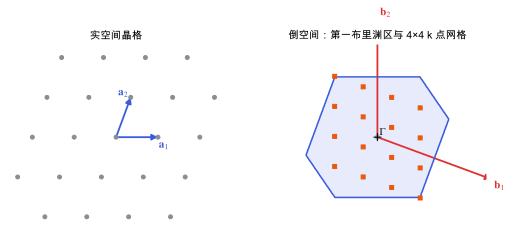

倒空间、布里渊区与 k 点采样
倒格子和布里渊区的定义，为什么周期计算要在布里渊区内积分，Monkhorst–Pack 网格怎样选。
直观阅读需要
- 傅里叶分析：周期函数的傅里叶级数
- 晶格基矢与晶胞
完整推导还需要
- 晶体对称性与空间群
- Bloch 定理
只是提示，不需要先读完才能往下看。
直觉直观解释
实空间晶格描述“原子怎样重复”；倒格子描述“哪些平面波和这种重复相容”。凡是有晶格周期性的函数（势、密度），它的傅里叶分量只出现在倒格矢 \mathbf{G} 上。
Bloch 定理说电子态可以用一个波矢 \mathbf{k} 标记，而 \mathbf{k} 和 \mathbf{k}+\mathbf{G} 描述同一个态。所以只需考虑一个倒空间的原胞，最常用的取法是第一布里渊区 (Brillouin zone, BZ)：离原点比离任何其他倒格点都近的区域。
总能、密度这类量都要对 BZ 中所有占据态求平均，也就是在 BZ 上做积分。计算里用有限个 k 点代替积分，这就是 k 点采样。
关键的反比关系：实空间晶胞越大，倒格子越小，BZ 越小，同样精度需要的 k 点越少。

| 符号 | 是什么 | 图里对应 |
|---|---|---|
| \mathbf{a}_1, \mathbf{a}_2 | 实空间晶格基矢 | 左图黑色箭头 |
| \mathbf{b}_1, \mathbf{b}_2 | 倒格子基矢 | 右图黑色箭头 |
| BZ | 第一布里渊区 | 右图橙色多边形 |
| Γ | 倒空间原点 \mathbf{k}=0 | 右图标注的中心点 |
| \mathbf{k} 网格 | Monkhorst–Pack 采样点 | 右图蓝点 |
定义与公式数学与推导
k 点密度怎么选
精度由倒空间中的网格间距决定，而不是由 N_i 本身决定。因为 |\mathbf{b}_i| \propto 1/|\mathbf{a}_i|，一种常见做法是让 N_i\,|\mathbf{a}_i| 大致相等，即沿短轴取更多 k 点 [VASP Wiki: KPOINTS]。
绝缘体的能带在 BZ 中平滑，积分收敛快；金属有费米面，占据数在 BZ 中不连续，需要更密的网格和展宽 (smearing)。
在本研究线里的样子对应与边界
- 分子晶体是绝缘体，晶胞较大：β-甘氨酸这类体系通常不需要很密的 k 网格，但仍要对目标量（总能差、应力、压电系数）做收敛（见 收敛测试）。
- 单斜晶胞的三个轴长不同：按轴长反比分配 N_i，不要三个方向取同样的数。
- 六方体系：通常推荐 Γ 中心网格，因为偏移网格可能破坏六方对称性 [VASP Wiki: KPOINTS]。
- 声子与 DFPT：波矢 \mathbf{q} 同样在 BZ 中取值（见 声子与晶格动力学）；超胞方法里，超胞越大，对应的 q 网格越密。
常见坑对应与边界
- 换超胞后不缩小 k 网格：超胞 2\times2\times2 时 BZ 缩小一半，k 网格应相应减半，否则浪费计算。
- 只按 N_i 收敛而不看间距：不同晶胞之间比较时，应该保持相同的 k 点间距。
- 用偶数网格算需要 Γ 点的量：例如某些分析需要 Γ 点本征值，偶数 MP 网格里没有 Γ。
- 对称性约化的副作用：施加应变或电场后对称性降低，不可约 k 点会变多；做有限差分时要保证参考计算与扰动计算用一致的 k 网格。
检验自己对应与边界
参考资料
论文Monkhorst & Pack 1976
尚未实际查阅，目前只是拟查阅书目
官方文档VASP Wiki: KPOINTS
尚未实际查阅，目前只是拟查阅书目
教材Martin 2020
尚未实际查阅，目前只是拟查阅书目
分类晶体与固体 · 概念 · 状态：草稿